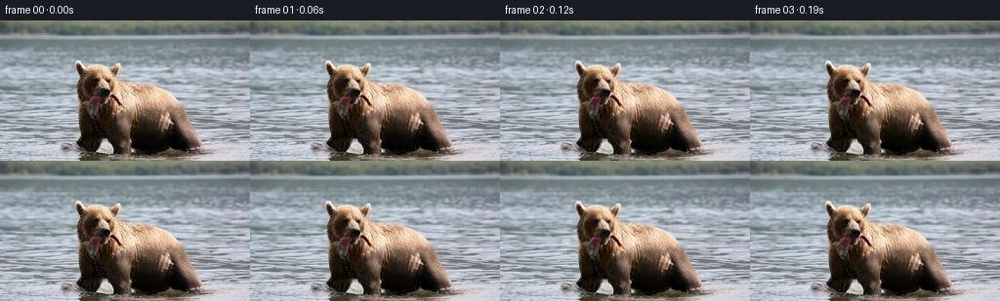
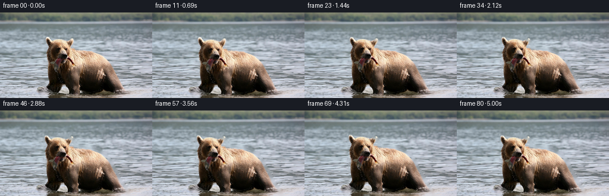

← 本轮 smoke 总览traex/GPT-5.6-Sol · 0872_s1
text · 256×144 · 16 FPS · 81 帧 · 状态 failed · 输出 tokens 13229
原始任务a brown bear in the water with a fish in its mouth
当前保存结果
此结果可播放，但该运行尚未通过最终提交审核。页面展示不代表评测通过。
已保存候选与代码修改
这里按时间展示外部捕获的候选，每份均可单独播放。保存新版本不等于完成视觉检查；下方工具证据记录实际看过的图。
候选 01 · 2026-11-08T20:26:02.364966+00:00 · 点开播放与检查图
inspection.png

transition_check.png

代码变化
--- 上一保存版本
+++ 本次保存版本
@@ -0,0 +1,183 @@
+"""Create a subtle, source-preserving animation from ``first_frame.png``.
+
+The shot is animated entirely with deterministic geometric and photometric
+operations. A softly matted bear is given a slow swimming drift and a small
+head/body bob, while the surrounding water receives low-amplitude travelling
+distortions and changing specular ripples. No assets other than the supplied
+first frame and task specification are used.
+"""
+
+from __future__ import annotations
+
+import json
+from pathlib import Path
+
+import cv2
+import numpy as np
+from PIL import Image
+
+import artifact_io
+
+
+ROOT = Path(__file__).resolve().parent
+
+
+def _remap(image: np.ndarray, map_x: np.ndarray, map_y: np.ndarray) -> np.ndarray:
+ """High-quality reflected-border remapping for RGB and scalar images."""
+ return cv2.remap(
+ image,
+ map_x.astype(np.float32),
+ map_y.astype(np.float32),
+ interpolation=cv2.INTER_CUBIC,
+ borderMode=cv2.BORDER_REFLECT_101,
+ )
+
+
+def _bear_matte(height: int, width: int) -> tuple[np.ndarray, np.ndarray]:
+ """Return hard and feathered mattes for the central bear.
+
+ The points follow the visible warm-brown silhouette in the supplied frame:
+ a raised head on the left and the widening, partly submerged body at right.
+ A generous matte keeps fur-edge pixels attached during the tiny motion.
+ """
+ points = np.array(
+ [
+ (77, 42), (91, 42), (113, 45), (123, 51), (126, 61),
+ (153, 63), (169, 69), (178, 76), (186, 87), (191, 98),
+ (198, 109), (202, 120), (211, 131), (218, 143),
+ (78, 143), (77, 132), (76, 124), (79, 116), (78, 106),
+ (78, 96), (78, 86), (77, 75), (76, 64), (76, 53),
+ ],
+ dtype=np.int32,
+ )
+ hard = np.zeros((height, width), np.uint8)
+ cv2.fillPoly(hard, [points], 255)
+ # A tiny closing joins stray edge hairs without swallowing nearby water.
+ hard = cv2.morphologyEx(hard, cv2.MORPH_CLOSE, np.ones((3, 3), np.uint8))
+ soft = cv2.GaussianBlur(hard.astype(np.float32) / 255.0, (0, 0), 1.15)
+ return hard, np.clip(soft, 0.0, 1.0)
+
+
+def make_frames(source: np.ndarray, frame_count: int) -> np.ndarray:
+ h, w = source.shape[:2]
+ yy, xx = np.mgrid[0:h, 0:w].astype(np.float32)
+ hard_bear, bear_alpha = _bear_matte(h, w)
+
+ # A clean plate is required only in the 1--4 px sliver uncovered by the
+ # moving silhouette. Inpainting is therefore safely hidden almost
+ # everywhere and merely extends adjacent water texture beneath the edge.
+ erase = cv2.dilate(hard_bear, np.ones((7, 7), np.uint8), iterations=1)
+ clean_plate = cv2.inpaint(source, erase, 5.0, cv2.INPAINT_TELEA)
+ srcf = source.astype(np.float32)
+ cleanf = clean_plate.astype(np.float32)
+
+ # Water influence is softened around the subject and is weaker above the
+ # waterline. This prevents the travelling distortion from bending the fur.
+ water = 1.0 - cv2.GaussianBlur(hard_bear.astype(np.float32) / 255.0, (0, 0), 3.2)
+ depth = np.clip((yy - 10.0) / 105.0, 0.12, 1.0)
+ water_strength = np.clip(water * depth, 0.0, 1.0)
+
+ # Smooth region used for the head's slightly stronger buoyant motion.
+ head_weight = np.exp(-(((xx - 106.0) / 39.0) ** 2 + ((yy - 79.0) / 43.0) ** 2))
+ head_weight *= bear_alpha
+
+ frames: list[np.ndarray] = []
+ for index in range(frame_count):
+ if index == 0:
+ # Required to be pixel-identical, bypassing even float conversion.
+ frames.append(source.copy())
+ continue
+
+ seconds = index / 16.0
+ progress = index / float(frame_count - 1)
+
+ # A nearly imperceptible camera follow moves every visual element,
+ # including any fish pixels immediately in front of the muzzle.
+ camera_dx = -1.15 * progress
+ camera_dy = 0.12 * np.sin(2.0 * np.pi * seconds / 4.6)
+
+ # Two travelling wave fields at different scales. Subtracting their
+ # t=0 states guarantees that motion grows continuously out of frame 0.
+ phase1 = 0.050 * xx + 0.145 * yy
+ phase2 = 0.092 * xx - 0.060 * yy
+ wave_x = (
+ 0.64 * (np.sin(phase1 - 2.15 * seconds) - np.sin(phase1))
+ + 0.24 * (np.sin(phase2 + 1.35 * seconds) - np.sin(phase2))
+ ) * water_strength
+ wave_y = (
+ 0.21 * (np.sin(0.071 * xx + 0.185 * yy - 1.55 * seconds)
+ - np.sin(0.071 * xx + 0.185 * yy))
+ ) * water_strength
+
+ water_map_x = xx - camera_dx + wave_x
+ water_map_y = yy - camera_dy + wave_y
+
+ # Introduce the clean plate in proportion to actual silhouette travel;
+ # this avoids a one-frame matte-edge pop at the start of the shot.
+ swim_dx = -2.55 * progress + 0.24 * np.sin(2.0 * np.pi * seconds / 3.15)
+ clean_mix = np.clip(abs(swim_dx) / 1.35, 0.0, 1.0)
+ background_source = srcf * (1.0 - clean_mix) + cleanf * clean_mix
+ background = _remap(background_source, water_map_x, water_map_y)
+
+ # Water glints brighten and dim by only a few levels. Restrict the
+ # effect to naturally bright pixels, where it reads as specular motion.
+ luminance = (0.299 * background[..., 0] + 0.587 * background[..., 1]
+ + 0.114 * background[..., 2])
+ glint_gate = np.clip((luminance - 118.0) / 95.0, 0.0, 1.0) * water_strength
+ shimmer = (
+ np.sin(0.105 * xx + 0.315 * yy - 3.2 * seconds)
+ - np.sin(0.105 * xx + 0.315 * yy)
+ )
+ background += (1.75 * shimmer * glint_gate)[..., None]
+
+ # The bear advances slowly to the left and bobs with two non-matching
+ # periods, keeping the movement organic and avoiding a mechanical loop.
+ body_bob = (
+ 0.58 * np.sin(2.0 * np.pi * seconds / 2.45)
+ + 0.18 * np.sin(2.0 * np.pi * seconds / 1.18)
+ )
+ head_bob = 0.46 * np.sin(2.0 * np.pi * seconds / 1.72)
+ head_sway = 0.18 * np.sin(2.0 * np.pi * seconds / 1.95)
+ nod = np.deg2rad(0.34) * np.sin(2.0 * np.pi * seconds / 2.15)
+
+ total_dx = camera_dx + swim_dx + head_weight * head_sway
+ total_dy = camera_dy + body_bob + head_weight * head_bob
+
+ # Inverse-map a softly varying nod around the upper head. The maximum
+ # rotation is under half a degree, enough for life without rubberiness.
+ subject_map_x = xx - total_dx + nod * head_weight * (yy - 82.0)
+ subject_map_y = yy - total_dy - nod * head_weight * (xx - 108.0)
+ subject = _remap(srcf, subject_map_x, subject_map_y)
+ moved_alpha = _remap(bear_alpha, subject_map_x, subject_map_y)
+ moved_alpha = np.clip(moved_alpha, 0.0, 1.0)
+
+ frame = subject * moved_alpha[..., None] + background * (1.0 - moved_alpha[..., None])
+
+ # Faint horizontal ripple refraction crosses the submerged lower body.
+ # This uses a remapped copy of the just-composited image rather than a
+ # synthetic painted line, preserving the source's natural water detail.
+ submerge = np.clip((yy - 108.0) / 30.0, 0.0, 1.0) * moved_alpha
+ ripple_shift = 0.42 * (
+ np.sin(0.22 * yy - 2.5 * seconds) - np.sin(0.22 * yy)
+ ) * submerge
+ refracted = _remap(frame.astype(np.float32), xx + ripple_shift, yy)
+ ripple_mix = (0.16 * submerge)[..., None]
+ frame = frame * (1.0 - ripple_mix) + refracted * ripple_mix
+
+ frames.append(np.clip(np.rint(frame), 0, 255).astype(np.uint8))
+
+ return np.stack(frames, axis=0)
+
+
+def main() -> None:
+ spec = json.loads((ROOT / "task_spec.json").read_text())
+ source = np.asarray(Image.open(ROOT / "first_frame.png").convert("RGB"), dtype=np.uint8)
+ expected = (int(spec["height"]), int(spec["width"]), 3)
+ if source.shape != expected:
+ raise ValueError(f"first frame shape {source.shape} does not match {expected}")
+ frames = make_frames(source, int(spec["frames"]))
+ artifact_io.save(frames, ROOT)
+
+
+if __name__ == "__main__":
+ main()
候选 02 · 2026-11-08T20:26:06.966204+00:00 · 点开播放与检查图
inspection.png

transition_check.png

代码变化
代码未变化；重新保存了产物。
可观测工具行为
命令 1 · 2026-11-08T20:24:10.879211+00:00/bin/bash -lc "cat GENERATION_RULES.md && printf '\\n--- PROMPT ---\\n' && cat prompt.txt"
exit 0 命令 2 · 2026-11-08T20:24:11.611885+00:00/bin/bash -lc "find . -maxdepth 2 -type f -printf '%p\\n' | sort && printf '\\n--- TOOL VERSIONS ---\\n' && python3 - <<'PY'
from PIL import Image
import cv2, numpy as np
print('Pillow OK')
print('opencv', cv2.__version__)
print('numpy', np.__version__)
PY
ffmpeg -version | head -n 3"exit 0 命令 3 · 2026-11-08T20:24:11.821096+00:00/bin/bash -lc "python3 - <<'PY'
from PIL import Image
import numpy as np
im=Image.open('first_frame.png')
a=np.asarray(im)
print('mode,size:',im.mode,im.size)
print('shape,dtype:',a.shape,a.dtype)
print('range:',a.min(),a.max())
print('mean:', a.reshape(-1,a.shape[-1]).mean(0) if a.ndim==3 else a.mean())
PY"exit 0 命令 4 · 2026-11-08T20:24:24.097835+00:00/bin/bash -lc "cat task_spec.json; printf '\\n--- artifact_io.py ---\\n'; sed -n '1,260p' artifact_io.py"
exit 0 命令 5 · 2026-11-08T20:24:25.509536+00:00/bin/bash -lc "python3 - <<'PY'
# Produce machine-readable component analysis, edges/bboxes by color semantics
from PIL import Image
import numpy as np, cv2
im=np.asarray(Image.open('first_frame.png'))
f=im.astype(float); R,G,B=[f[:,:,i] for i in range(3)]
hsv=cv2.cvtColor(im,cv2.COLOR_RGB2HSV)
# masks useful likely: brown warm/dark bear, water blue/gray, bright fish maybe silver
masks={
'warm':(R>G*1.07)&(R>B*1.08),
'brown':(R>G*1.05)&(G>B*.9)&(R<180)&(R>30),
'dark':(R+G+B<180),
'neutral_dark':(R+G+B<270)&(np.max(f,2)-np.min(f,2)<35),
'bright':(R+G+B>610),
'blueish':(B>R*1.07)&(B>G*1.01),
'greenish':(G>R*1.07)&(G>B*1.01),
}
for n,m in masks.items():
ys,xs=np.where(m)
print(n, len(xs), 'bbox', (int(xs.min()),int(ys.min()),int(xs.max()),int(ys.max())) if len(xs) else None,'centroid', (round(xs.mean(),1),round(ys.mean(),1)) if len(xs) else None)
# components >20
nc,la,st,ce=cv2.connectedComponentsWithStats(m.astype(np.uint8),8)
cc=[]
for i in range(1,nc):
x,y,w,h,a=st[i]
if a>20: cc.append((int(a),(int(x),int(y),int(w),int(h)),tuple(np.round(ce[i],1))))
print(' comps',sorted(cc,reverse=True)[:15])
# edge spatial grid means
ed=cv2.Canny(im,70,140)
print('edge grid 8x6 blocks values')
for y in range(0,144,24): print(' '.join(f'{ed[y:y+24,x:x+32].mean()/255:.2f}' for x in range(0,256,32)))
PY"exit 0 命令 6 · 2026-11-08T20:24:25.700684+00:00/bin/bash -lc "python3 - <<'PY'
from PIL import Image
import numpy as np, cv2
im=np.asarray(Image.open('first_frame.png'))
# per-row and col summaries luminance and rough colors
lum=cv2.cvtColor(im,cv2.COLOR_RGB2GRAY)
for y in range(0,144,8):
r=im[y:y+8]
print('row',y,'mean',np.round(r.mean((0,1)),1),'lum',round(lum[y:y+8].mean(),1),'std',round(r.std(),1))
print('\\ncols')
for x in range(0,256,16):
r=im[:,x:x+16]
print('col',x,'mean',np.round(r.mean((0,1)),1),'lum',round(lum[:,x:x+16].mean(),1),'std',round(r.std(),1))
# kmeans colors
z=im.reshape(-1,3).astype(np.float32)
crit=(cv2.TERM_CRITERIA_EPS+cv2.TERM_CRITERIA_MAX_ITER,50,.2)
_,lab,cen=cv2.kmeans(z,12,None,crit,10,cv2.KMEANS_PP_CENTERS)
count=np.bincount(lab.ravel())
for i in np.argsort(count)[::-1]: print(count[i],np.round(cen[i],1))
PY"exit 0 命令 7 · 2026-11-08T20:24:40.624117+00:00/bin/bash -lc "python3 - <<'PY'
from PIL import Image
import numpy as np, cv2
im=np.asarray(Image.open('first_frame.png'))
f=im.astype(float); R,G,B=np.moveaxis(f,2,0); L=(R+G+B)/3
# print block semantic dominant / intensity at 4x4, region x60:224 y32:144
for y in range(32,144,4):
s=''
for x in range(60,224,4):
q=im[y:y+4,x:x+4].reshape(-1,3).mean(0); r,g,b=q; mx=max(q); mn=min(q)
if sum(q)<105: c='K'
elif sum(q)<180:c='D'
elif sum(q)<270:c='d'
elif r>g*1.12 and r>b*1.18:c='B'
elif r>g*1.05 and r>b*1.08:c='b'
elif sum(q)>660:c='W'
elif sum(q)>570:c='L'
elif b>r*1.07:c='~'
else:c='.'
s+=c
print(f'{y:03d} {s}')
PY"exit 0 命令 8 · 2026-11-08T20:24:41.054987+00:00/bin/bash -lc "python3 - <<'PY'
from PIL import Image
import numpy as np, cv2
im=np.asarray(Image.open('first_frame.png'))
# Print grayscale ascii region, 2 px cells but quantiles chars dark->light
chars='@%#*+=-:. '
g=cv2.cvtColor(im,cv2.COLOR_RGB2GRAY)
for y in range(36,144,3):
s=''
for x in range(60,224,3):
v=g[y:y+3,x:x+3].mean(); s+=chars[min(9,int(v/256*10))]
print(s)
PY"exit 0 命令 9 · 2026-11-08T20:24:41.578656+00:00/bin/bash -lc "python3 - <<'PY'
from PIL import Image
import numpy as np, cv2
im=np.asarray(Image.open('first_frame.png'))
f=im.astype(np.int16);R,G,B=np.moveaxis(f,2,0)
# For each row runs where warmth score high / darkness indicative subject
warm=(R-G>5)&(R-B>8)&(R<245)
sub=warm | ((R+G+B<250)&(np.indices(R.shape)[1]>70)&(np.indices(R.shape)[1]<220)&(np.indices(R.shape)[0]>35))
sub=cv2.morphologyEx(sub.astype(np.uint8),cv2.MORPH_CLOSE,np.ones((7,7),np.uint8))
for y in range(35,144,3):
xs=np.where(sub[y])[0]; runs=[]
if len(xs):
breaks=np.r_[0,np.where(np.diff(xs)>1)[0]+1,len(xs)]
runs=[(int(xs[a]),int(xs[b-1])) for a,b in zip(breaks[:-1],breaks[1:]) if b-a>=2]
print(y,runs)
PY"exit 0 命令 10 · 2026-11-08T20:25:59.717893+00:00/bin/bash -lc 'python3 generate.py'
exit 0 命令 11 · 2026-11-08T20:26:14.756404+00:00/bin/bash -lc "python3 - <<'PY'
from pathlib import Path
import numpy as np
from PIL import Image
src=np.asarray(Image.open('first_frame.png').convert('RGB'))
fr=np.stack([np.asarray(Image.open(f'frames/{i:02d}.png').convert('RGB')) for i in range(81)])
print('shape dtype:',fr.shape,fr.dtype)
print('frame0 exact:',np.array_equal(fr[0],src),'maxerr',np.abs(fr[0].astype(int)-src).max())
print('range:',fr.min(),fr.max())
# consecutive absolute change statistics
for i in [1,2,10,20,40,60,80]:
d=np.abs(fr[i].astype(np.int16)-fr[i-1].astype(np.int16))
print(f'step {i-1:02d}->{i:02d}: mean={d.mean():.3f} p95={np.percentile(d,95):.1f} p99={np.percentile(d,99):.1f} max={d.max()} changed={np.mean(np.any(d,2)>0):.3f}')
print('all-step mean range:',end=' ')
ms=[]
for i in range(1,81):ms.append(np.abs(fr[i].astype(float)-fr[i-1]).mean())
print(min(ms),max(ms),'mean',np.mean(ms),'argmax',np.argmax(ms)+1)
for i in [1,10,20,40,60,80]:
d=np.abs(fr[i].astype(np.int16)-src.astype(np.int16))
print(f'from0 {i:02d}: mean={d.mean():.3f} p95={np.percentile(d,95):.1f} max={d.max()}')
print('pixels.npz',Path('pixels.npz').stat().st_size,'index',Path('index.html').stat().st_size)
PY"exit 0 命令 12 · 2026-11-08T20:26:14.987181+00:00/bin/bash -lc 'python3 -m py_compile generate.py artifact_io.py && git status --short 2>/dev/null || true && du -sh . frames pixels.npz index.html inspection.png transition_check.png'
exit 0 命令 13 · 2026-11-08T20:26:15.345773+00:00/bin/bash -lc "python3 - <<'PY'
import numpy as np, cv2
from PIL import Image
fr=np.stack([np.asarray(Image.open(f'frames/{i:02d}.png')) for i in range(81)])
# Temporal acceleration statistics. Large local spikes flag matte pops.
a=fr.astype(np.float32)
v=a[1:]-a[:-1]; acc=v[1:]-v[:-1]
print('velocity mean abs',np.mean(np.abs(v)),'p99',np.percentile(np.abs(v),99),'max',np.max(np.abs(v)))
print('accel mean abs',np.mean(np.abs(acc)),'p99',np.percentile(np.abs(acc),99),'max',np.max(np.abs(acc)))
# per region delta means over total shot, water left/top, bear, right wake
regions={'top':(slice(0,40),slice(0,256)),'leftwater':(slice(40,144),slice(0,72)),'bear':(slice(40,144),slice(76,218)),'rightwater':(slice(40,144),slice(220,256))}
for n,(ys,xs) in regions.items():
d=np.abs(a[-1,ys,xs]-a[0,ys,xs]); st=np.abs(v[:,ys,xs])
print(n,'enddiff',d.mean(),'stepmean',st.mean(),'end p99',np.percentile(d,99))
# Look for isolated extreme output edges not present originally
for i in [0,1,20,40,60,80]:
gray=cv2.cvtColor(fr[i],cv2.COLOR_RGB2GRAY)
e=cv2.Laplacian(gray,cv2.CV_32F)
print('edge',i,'meanabs',np.abs(e).mean(),'p99',np.percentile(np.abs(e),99),'max',np.abs(e).max())
PY"exit 0 保存候选 2 份；完成命令 13 次；可验证图片返回 0 张。原始 API 响应与完整日志保留在本地。